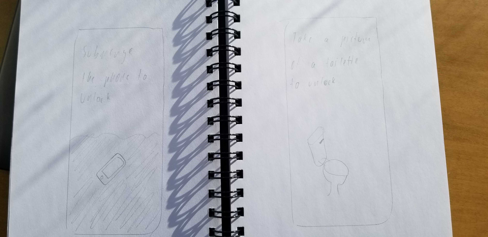
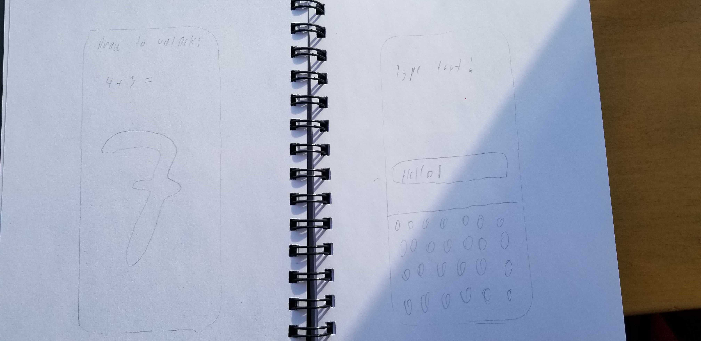
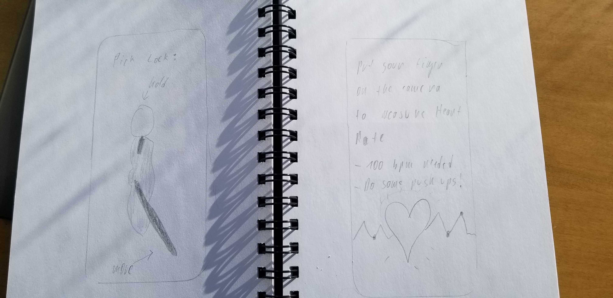
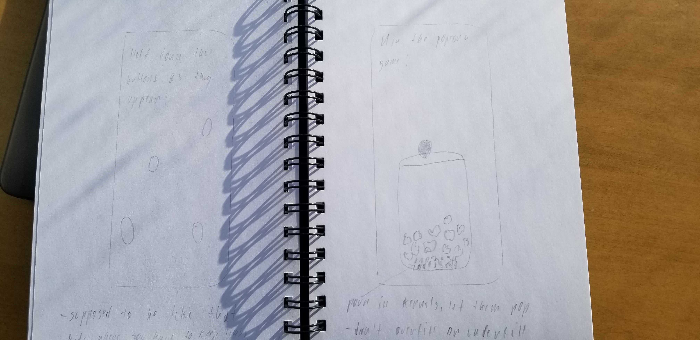

Here, in my initial sketches, I was trying to come up with something original for the sensor part of the assignment. Turns out almost every team came up with some combination of "spin your phone," lol. On the right you can see my riddle idea. Essentially, the user'd have to listen to a riddle and then answer it correctly to unlock the phone. I actually quite liked the idea of it but I suspect it didn't catch anyone else's eye because dealing with speech to text is not easy...
My favorite "submerge idea," I was mostly going off of the fact that my Samsung S8 is indeed waterproof, if you have any other model, proceed at your own risk. This idea actually got mentioned in the feedback from the class but I must agree it was too whacky to pursue it further. On the right-hand side you can see an uninspiring usage of camera, simply take a picture of an object and unlock the phone that way. At this point I was just trying to brainstorm a bit to see if using the camera has any merit from my point of view.
On the left we can see a simple gesture based answering way of unlocking the phone. That one was okay but nothing groundbreaking, I was mostly trying to explore some gesture/touch based ideas. A different solution came to mind on the right though. The user'd have to type a sentence or a phrase as fast as possible to unlock the phone which I found quite practical = being forced to practice your typing skills. We all know that these days you can't type fast enough...
Another favorite idea of mine was that of a pick locking mechanic. Granted, I stole the idea from Skyrim but I find this one quite exciting, I think it's a perfect metaphor for unlocking your phone. The other sketch, on the other hand, uses the camera to measure your heartbeat and the phone won't unlock unless you reach a specific number of bpm. At least you're forced to do a few push ups before further perpetuating the addiction to your phone.
And finally, the twister (on the left) which was quite popular in our group but ended up being dropped because there were other more interesting ideas to pursue. What I had mind here was that specific spots'd appear highlighted on the screen and you'd have to hold them all down with your fingers. The phone'd open once you're holding all 5 fingers at the designated spots. The other idea was that of a popcorn game, where you'd hold you finger down on the screen which'd result in corn kernels being poured into a jar. The goal is to pour in just the right amount of kernels because once you're done pouring - they automatically pop, and you have to get the amount of popcorn just right, neither overfill nor underfill. This idea was liked in our group as well.
As for the final variations, since we're a team of five, everybody had to come up with 2 (1 for each: sensor, gesture) of their own takes on the two ideas we settled on. For the gesture idea we settled on Jacky's idea to have up/down and
left/right swipes which would result in different image combinations. The user is looking for a specific combination each time to unlock the phone (Eg. A red pizza).
The second idea was primarily Payal's and got a very positive feedback from the class. Essentially, you'd have bacteria on the screen and would have to get rid of them somehow in order to unlock the phone (shaking, blowing, tapping,
wiping, etc.). We were bouncing quite a lot of versions of these back and forth...
These two were my takes on the final ideas. In the first case I simply had a variation of what Jacky had already come up with just with a caveat. I was thinking of including real life images where you'd have to match a background and
something from its foreground that was photoshopped out. That way the user doesn't need to know which combination they're looking for beforehand and can simply follow their intuition to match the images in a way that makes sense.
The second one was taking advantage of squeeze pressure. You'd have a screen full of bacteria and to get rid of them you'd have to squeeze the phone (metaphor for a bottle of disinfectant) and pour soap/cleaning liquid which starts
filling the screen (took that from the popcorn game sketch) and kills the bacteria. The goal was again to neither overfill nor underfill and kill all the bacteria.
Here you can see a lot of different approaches to the final ideas. In terms of the bacteria idea, we have some coughing, moving and blowing. As for the "image match" idea, my team mates were also considering using sensors to realize it which I was vehemently against. I though that the idea should be 100% gesture based, since swiping already makes so much sense for any smartphone user and is very intuitive.
We decided to split our team into a group of 3 and 2 people. I was working in the group of 3 and we realized the bacteria idea. The image matching idea was created by the group of 2.
For the "image matching" idea we went with a very simple version of it. You have a single-colored background and a white icon/item in the middle. The item can be changed by swiping vertically whereas the background color changes with
horizontal swipes. The user has to know what combination they're looking for (or simply employ trial and error). Jacky and Dennis worked on this one, they decided to use a Web-App platform called Ionic and did a pretty good job as far as I
can tell.
The bacterial idea ended up being a simple shake that makes the bacteria explode and that consequently unlocks the screen. We settled on this version because it seemed like the most intuitive approach to us. I worked on this one
along
with Wesley and Payal. We decided to go with Android Studio because we were all familiar with it to some extent plus our implementation required a use of sensors and for those cases it's always best to use the native platform. Our group
worked efficiently and we each contributed to a similar extent which I was very happy with and is why I had a great time working on it.
In the "idea department" I had quite a few sketches that were liked inside the group but none of them appealing enough to make it into the two finalists. In deciding on how to approach our "bacterial" problem I was the one to suggest the bacterias explode. I simply thought it'd look pretty cool and was intuitive and straightforward. Others agreed and so we made it. As for the actual implementation I added the code for registering when the phone's being shaked. I also added some finishing touches on the UI which included scaling the screen images properly and adding the blurred background so the whole thing'd look more like an actual lock screen.
Image Matching: https://github.com/jickay/581_P1_Gesture
Bacterial Shaking/Germ Popping: https://github.com/Be-bo/germPopper